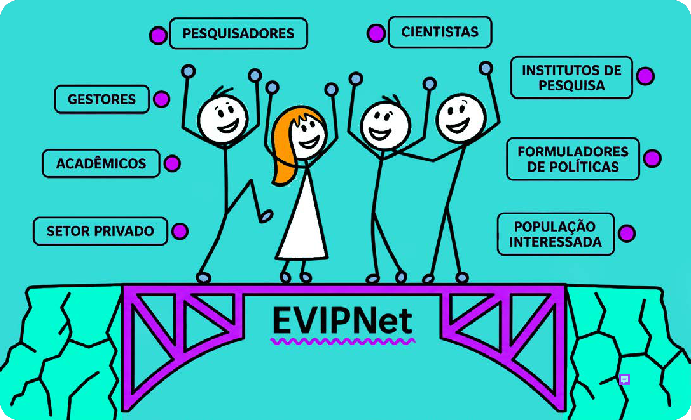

Módulo 1 | Aula 3
Núcleos de Evidências e Redes de Pesquisa em PIE
Introdução
Na aula anterior você conheceu à Rede Evidence Informed Policy Network (EVIPNet), uma rede mundial de evidências, vinculada à Organização Mundial de Saúde (OMS), criada para promover o uso sistemático de evidências científicas na formulação de políticas de saúde e viu que, atualmente, a EVIPNet funciona em três níveis: global, regional e nacional.
No Brasil, a Rede EVIPNet é coordenada pelo Departamento de Ciência e Tecnologia (DECIT/SCTIE) do Ministério da Saúde (MS), sendo integrada por pesquisadores, gestores e profissionais de saúde de diversas instituições, que formam um verdadeiro ecossistema colaborativo, dedicado a fortalecer o Sistema Único de Saúde (SUS). Esse sistema atua como uma ponte estratégica, que conecta o rigor da ciência com a realidade da gestão pública. O propósito da rede é facilitar a formulação, a implementação e a gestão de serviços e sistemas de saúde mais fortes, sempre informados.

A EVIPNet Brasil é integrada por uma rede de NEvs, instituições locais e regionais que atuam no apoio à formulação, implementação, monitoramento e avaliação de PIE.
Como você viu antes neste módulo, essas estruturas organizacionais respondem a uma necessidade crítica: mesmo evidências de alta qualidade têm impacto limitado se não forem incorporadas aos processos decisórios. O uso sistemático de evidências científicas na formulação de políticas de saúde é fundamental para qualificar a utilização de recursos públicos, promovendo eficiência, eficácia, efetividade, equidade e transparência.
Entre as principais atribuições dos NEvs estão:
- A produção de estudos e o apoio a atividades em PIE.
- A identificação de lacunas de conhecimento relevantes para as políticas públicas.
- O fortalecimento do monitoramento e da avaliação, bem como a articulação de atores envolvidos na implementação dessas políticas.
Os NEvs também atuam em outras frentes, como:
- Sensibilização e capacitação de agentes públicos e privados para o uso de evidências.
- Fortalecimento da capacidade gerencial e da governança.
- Promoção da cultura de evidências em seus territórios e redes de colaboração.
- Apoio solidário a outros Núcleos.
Além disso, elaboram produtos de tradução do conhecimento, promovendo aproximação entre a ciência e os tomadores de decisão, como:
- Resumos.
- Mapas de evidências.
- Informes técnicos.
- Outras atividades de democratização do conhecimento.
Veremos mais sobre isso nos próximos módulos do curso.